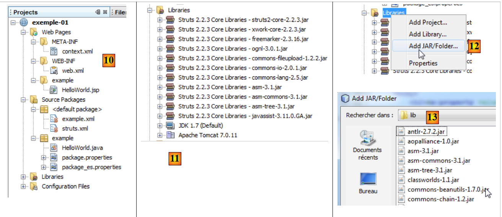
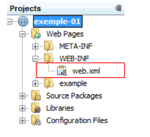
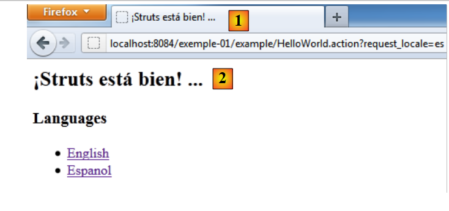

2. مثال أول
ستقتصر معظم أمثلةنا على طبقة الويب التي تم تنفيذها باستخدام Struts 2:
 |
بمجرد تغطية الأساسيات، سنقوم بدراسة مثال أكثر تعقيدًا باستخدام بنية متعددة الطبقات.
2.1. إنشاء المثال
نحن بصدد إنشاء تطبيقنا الأول.
 |
- في [1]، نقوم بإنشاء مشروع جديد
- في [2]، نختار نوع Java Web / Web Application
- في [3]، قم بتسمية المشروع
- في [4]، حدد موقع المشروع.
- في [5]، نجعل المشروع الجديد هو المشروع الرئيسي.
 |
- في [6]، حدد خادم Tomcat. عند تثبيت NetBeans 7.01، تم تثبيت خادمين: Apache Tomcat و GlassFish 3.1.
- في [7]، حدد أنك ستعمل مع إطار عمل Struts 2. يتوفر هذا الخيار لأن المكون الإضافي Struts 2 قد تم تثبيته. بدون المكون الإضافي، لا يتوفر إطار عمل Struts 2.
- في [8]، نطلب إنشاء المشروع النموذجي الذي سنقوم بدراسته.
- في [9]، يمكنك التحقق من مكتبات Struts 2 التي سيتم استخدامها.
 |
- في [10]، المشروع الذي تم إنشاؤه. سنعود إلى هذا لاحقًا.
- في [11]، مكتبات المشروع. تم دمجها بواسطة المكون الإضافي Struts 2. إذا لم يكن لديك المكون الإضافي، يمكنك العثور على هذه المكتبات في المجلد [lib] الخاص بتوزيع Struts 2 الذي تم تنزيله. ستتبع بعد ذلك الخطوتين 12 و 13.
2.2. المشروع الذي تم إنشاؤه في نظام الملفات
 |
- في [1]، تعرض علامة التبويب [Projects] عرض "المطور" للمشروع
- في [2]، تعرض علامة التبويب [Files] مجلد المشروع في نظام الملفات
- في [2A]، يتم تمثيل فرع [Web Pages] في [2] بواسطة مجلد [web] [2B]
- في [3A]، يتم تمثيل فرع [حزم المصدر] في [2] بواسطة مجلد [java] [3B]
2.3. ملف التكوين [META-INF/context.xml]
 |
هذا الملف كما يلي:
<?xml version="1.0" encoding="UTF-8"?>
<Context antiJARLocking="true" path="/exemple-01"/>
يشير السطر 2 إلى أن سياق تطبيق الويب هو /example-01. سيتم التعامل مع جميع عناوين URL من النوع [http://machine:port/exemple-01/...] بواسطة هذا التطبيق. يمكن العثور على هذا السياق في خصائص المشروع [2]: انقر بزر الماوس الأيمن على المشروع / خصائص / تشغيل.
2.4. ملف التكوين [WEB-INF/web.xml]
 |
يتم تكوين كل تطبيق ويب بواسطة ملف [web.xml] الموجود في مجلد [WEB-INF] الخاص بالتطبيق. وفيما يلي الملف الذي تم إنشاؤه:
<?xml version="1.0" encoding="UTF-8"?>
<web-app version="3.0" xmlns="http://java.sun.com/xml/ns/javaee" xmlns:xsi="http://www.w3.org/2001/XMLSchema-instance" xsi:schemaLocation="http://java.sun.com/xml/ns/javaee http://java.sun.com/xml/ns/javaee/web-app_3_0.xsd">
<filter>
<filter-name>struts2</filter-name>
<filter-class>org.apache.struts2.dispatcher.FilterDispatcher</filter-class>
</filter>
<filter-mapping>
<filter-name>struts2</filter-name>
<url-pattern>/*</url-pattern>
</filter-mapping>
<session-config>
<session-timeout>
30
</session-timeout>
</session-config>
<welcome-file-list>
<welcome-file>example/HelloWorld.jsp</welcome-file>
</welcome-file-list>
</web-app>
- تحدد الأسطر 3-6 مرشحًا تم تنفيذه بواسطة فئة Struts 2 [org.apache.struts2.dispatcher.FilterDispatcher]. تعمل هذه الفئة كوحدة التحكم (C) في نموذج MVC.
- الأسطر 7-10: تحدد التعيين بين نمط URL والمرشح الذي يجب أن يتعامل مع عناوين URL المطابقة لهذا النمط. هنا، تم تحديد أن أي عنوان URL (نمط /*) يجب أن يتم التعامل معه بواسطة المرشح المسمى struts2. هذا هو المرشح المحدد في الأسطر 3-6. وبالتالي، ستمر جميع عناوين URL عبر وحدة التحكم Struts 2.
- الأسطر 11-15: تحدد مدة جلسة المستخدم، والتي تم تعيينها هنا على 30 دقيقة. أثناء الطلبات المختلفة، يتم تتبع المستخدم بواسطة رمز جلسة يتم تعيينه له عند طلبه الأول، والذي يرسله بعد ذلك بشكل منهجي مع كل طلب جديد. وهذا يسمح لخادم الويب بالتعرف على المستخدم وإدارة "ذاكرة" له، تُعرف باسم الجلسة. إذا مر أكثر من 30 دقيقة بين طلبين، يتم إنشاء رمز جلسة جديد للمستخدم، الذي يفقد بذلك "ذاكرته" ويبدأ واحدة جديدة.
- الأسطر 16-18: تحدد الملف الذي سيتم عرضه عندما يصل المستخدم إلى تطبيق الويب دون طلب مستند. وبالتالي، عندما يكون عنوان URL المطلوب هو [http://machine:port/exemple-01]، سيكون عنوان URL الذي يتم تقديمه هو [http://machine:port/exemple-01/example/HelloWord.jsp].
2.5. ملف التكوين [struts.xml]
 |
ملف [struts.xml] هو ملف تكوين Struts 2. ويمكن وضعه في أي مكان في مسار ClassPath الخاص بالمشروع. في مشروع NetBeans أعلاه، يتكون مسار ClassPath الخاص بالمشروع من فرعين:
- حزم المصادر
- المكتبات
وبالتالي، فإن أي مجلد أو مكتبة موجودة في هذين الفرعين تعد جزءًا من مسار ClassPath للمشروع. ومن الشائع وضع ملف [struts.xml] في <الحزمة الافتراضية>. وفيما يلي محتواه:
<!DOCTYPE struts PUBLIC
"-//Apache Software Foundation//DTD Struts Configuration 2.0//EN"
"http://struts.apache.org/dtds/struts-2.0.dtd">
<struts>
<include file="example.xml"/>
<!-- Configuration for the default package. -->
<package name="default" extends="struts-default">
</package>
</struts>
- السطران 5 و 10: العلامة الجذرية للمستند هي العلامة <struts>
- السطر 6: يتم إدراج ملف [example.xml] هنا. وبالتالي، فإنه يجلب تكوينه الخاص. سنعود إلى هذا لاحقًا.
- السطران 8 و9: حدد حزمة باسم "default" هنا. تتيح لك الحزمة تكوين مجموعة من إجراءات Struts 2 التي تشترك في نفس عنوان URL. على سبيل المثال، [/path/Action1] و[/path/Action2]. يمكنك بعد ذلك تحديد حزمة لهذه الإجراءات:
<package name="employes" namespace="/employes" extends="struts-default">
... configuration
</package>
يُسمى الحزمة أعلاه "employees" وتقوم بتكوين الإجراءات باستخدام عنوان URL /employees/Action. يمكن للحزمة أن ترث من حزمة أخرى باستخدام الكلمة الرئيسية "extends". في المثال أعلاه، ترث الحزمة "employees" من الحزمة "struts-default". توجد هذه الحزمة في ملف [struts-default.xml] داخل مكتبة struts2-core.jar:
 |
تقوم الحزمة "struts-default" المحددة في ملف [struts-default.xml] بتكوين عناصر متنوعة، بما في ذلك قائمة من المعترضات التي يتم تنفيذها عند استدعاء إجراء ما. دعونا نعود إلى بنية MVC لتطبيق Struts 2:
 |
لمعالجة عنوان URL بالشكل [http://machine:port/.../Action]، سيقوم وحدة التحكم [FilterDispatcher] بإنشاء مثيل للفئة التي تنفذ الإجراء المطلوب وتنفيذ إحدى طرقها — بشكل افتراضي، طريقة تسمى execute. سيمر استدعاء طريقة execute هذه عبر سلسلة من المعترضات:
 |
تقوم كل من المعترضات والإجراء بمعالجة نفس الطلب. وتكفي قائمة المعترضات المحددة في حزمة struts-default في معظم الأحيان. ولذلك، ستقوم حزم Struts الخاصة بنا دائمًا بتوسيع حزمة struts-default. لمعرفة وظائف المعترضات المختلفة، راجع الفصل 4 من [ref2].
لنعد إلى ملف التكوين struts.xml:
<!DOCTYPE struts PUBLIC
"-//Apache Software Foundation//DTD Struts Configuration 2.0//EN"
"http://struts.apache.org/dtds/struts-2.0.dtd">
<struts>
<include file="example.xml"/>
<!-- Configuration for the default package. -->
<package name="default" extends="struts-default">
</package>
</struts>
- السطر 8: الحزمة المسماة "default" لها دور خاص. فهي تتولى معالجة الإجراءات التي لم يتم تكوينها في الحزم الأخرى. هنا، في السطرين 8-9، لم يتم تحديد أي تكوين للحزمة "default". لذلك يمكننا إزالة تعريف هذه الحزمة.
الآن دعونا نلقي نظرة على ملف [example.xml] المضمن في السطر 6 من ملف [struts.xml]:
<?xml version="1.0" encoding="UTF-8" ?>
<!DOCTYPE struts PUBLIC
"-//Apache Software Foundation//DTD Struts Configuration 2.0//EN"
"http://struts.apache.org/dtds/struts-2.0.dtd">
<struts>
<package name="example" namespace="/example" extends="struts-default">
<action name="HelloWorld" class="example.HelloWorld">
<result>/example/HelloWorld.jsp</result>
</action>
</package>
</struts>
- السطر 8: يحدد حزمة باسم example تمتد من حزمة struts-default. تتعامل هذه الحزمة مع عناوين URL من النوع /example/Action (مساحة الاسم /example).
- الأسطر 9-11: تحدد إجراءً باسم HelloWorld (سمة name) يتوافق مع عنوان URL /example/HelloWorld. يتم التعامل مع هذا الإجراء بواسطة مثيل لفئة example.HelloWorld (سمة class).
- ستقوم وحدة التحكم [FilterDispatcher] بتنفيذ طريقة execute لهذه الفئة.
- ستُرجع هذه الطريقة سلسلة تُسمى مفتاح التنقل.
- يجب تعريف مفاتيح التنقل المختلفة باستخدام علامات <result name="key"/> (السطر 10). إذا تم حذف السمة name، يتم استخدام مفتاح success بشكل افتراضي. وهذا هو الحال أعلاه. لذلك، يجب أن تُرجع طريقة execute لفئة example.HelloWorld مفتاح success إلى وحدة التحكم [FilterDispatcher].
- ثم تعرض وحدة التحكم [FilterDispatcher] الصفحة [/example/HelloWorld.jsp] (السطر 10).
إذا قمنا بدمج الملفين [struts.xml] و [example.xml] وإزالة الحزمة الافتراضية، التي تبدو غير ضرورية، فسيكون الأمر كما لو أننا قمنا بتقليص ملف [struts.xml] إلى ملف [example.xml] فقط.
2.6. إجراء HelloWorld
 |
وفقًا لملف [struts.xml] الذي درسناه، يتم تشغيل إجراء HelloWorld عندما يكون عنوان URL الذي يطلبه العميل هو /example/HelloWorld. ثم يتم تنفيذ طريقة execute الخاصة به. ويجب أن تعيد مفتاح تنقل. وقد رأينا أنه لم يكن هناك سوى مفتاح واحد: success، وأن الصفحة /example/HelloWorld.jsp تم إرسالها استجابةً للمستخدم.
فيما يلي كود إجراء HelloWorld:
package example;
import com.opensymphony.xwork2.ActionSupport;
public class HelloWorld extends ActionSupport {
public String execute() throws Exception {
setMessage(getText(MESSAGE));
return SUCCESS;
}
public static final String MESSAGE = "HelloWorld.message";
private String message;
public String getMessage() {
return message;
}
public void setMessage(String message) {
this.message = message;
}
}
- السطر 5: تمتد فئة HelloWorld إلى فئة Struts 2 ActionSupport. وهذا هو الحال دائمًا تقريبًا. وهذا يسمح لنا باستخدام طرق معينة، مثل طريقة getText في السطر 8.
- الأسطر 7–10: طريقة `execute`، التي يتم تنفيذها عند استدعاء وحدة التحكم Struts. نعلم أنها يجب أن تُرجع سلسلة، ومن هنا توقيعها في السطر 7. هنا، تُرجع الثابت `SUCCESS`، الذي تم تعريفه أيضًا في `ActionSupport`. يتم تعريف الثوابت الأخرى بنفس الطريقة لنتيجة طريقة `execute`:
SUCCESS | "success" |
خطأ | "خطأ" |
الإدخال | "الإدخال" |
تسجيل الدخول | "تسجيل الدخول" |
إذن هنا، تُرجع طريقة execute السلسلة "success". وبالرجوع إلى ملف [struts.xml]، يعني هذا أن الصفحة /example/HelloWorld.jsp ستُعرض للمستخدم.
- السطر 8: تقوم طريقة execute بتهيئة حقل message في السطر 14 بقيمة getText("HelloWorld.message"). تنتمي طريقة getText إلى الفئة الأم ActionSupport. وهي تسترد النص من ملف بناءً على اللغة المستخدمة. بشكل افتراضي، سيتم هنا استخدام ملف package.properties الموجود في نفس الحزمة التي توجد بها العملية. يتوفر هذا الملف في نسختين:
ملف [package.properties] كما يلي:
يتكون من سلسلة من الأسطر النصية بتنسيق key=value. إذا تم استخدام هذا الملف، فستُرجع getText("HelloWorld.message") القيمة Struts is up and running ...
ملف [package_es.properties] هو كما يلي:
إذا كانت اللغة المستخدمة من قبل متصفح العميل هي الإسبانية (السمة "es" في package_es.properties)، فإن getText("HelloWorld.message") ستُرجع القيمة ¡Struts está bien! ... وفي جميع الحالات الأخرى، سيتم استخدام ملف [package.properties].
2.7. طريقة العرض HelloWorld.jsp
 |
هذه هي القطعة الأخيرة من أحجية Struts. وهي طريقة العرض التي يتم عرضها عند طلب عنوان URL /example/HelloWorld. لقد رأينا المسار الذي سلكه الطلب الأولي حتى يتم عرض هذا الرد في النهاية. رمز الصفحة هو كما يلي:
<%@ page contentType="text/html; charset=UTF-8" %>
<%@ taglib prefix="s" uri="/struts-tags" %>
<html>
<head>
<title><s:text name="HelloWorld.message"/></title>
</head>
<body>
<h2><s:property value="message"/></h2>
<h3>Languages</h3>
<ul>
<li>
<s:url id="url" action="HelloWorld">
<s:param name="request_locale">en</s:param>
</s:url>
<s:a href="%{url}">English</s:a>
</li>
<li>
<s:url id="url" action="HelloWorld">
<s:param name="request_locale">es</s:param>
</s:url>
<s:a href="%{url}">Espanol</s:a>
</li>
</ul>
</body>
</html>
- تستخدم الصفحة علامات HTML (الأسطر 5 و6 و...) وعلامات من مكتبة محددة في السطر 3. تنتمي جميع علامات <s:xx> إلى هذه المكتبة.
- السطر 7: تسمح لك علامة <s:text> بعرض نص مختلف حسب لغة متصفح العميل. تحدد السمة name المفتاح الذي يجب البحث عنه في ملفات الرسائل. هنا أيضًا، سيتم استخدام ملفات package_xx.properties. تذكر أنها تحتوي على رسالة واحدة فقط بالمفتاح HelloWorld.message.
- السطر 11: تُستخدم علامة <s:property name="property"> لكتابة قيمة خاصية كائن يُسمى ActionContext. يحتوي هذا الكائن على:
- خصائص الإجراء الذي تم تنفيذه. ستعرض name="message" قيمة حقل الرسالة للإجراء الحالي. تُستخدم طريقتا get و set المرتبطتان بالحقل لاسترداد قيمته أو تهيئته. لذلك يجب أن تكون هاتان الطريقتان موجودتين.
- سمات الطلب الحالي المشار إليها بـ <s:property name="#request['key']">
- سمات جلسة عمل المستخدم، المشار إليها بـ <s:property name="#session['key']">
- سمات التطبيق نفسه، المشار إليها بـ <s:property name="#application['key']">
- المعلمات المرسلة من متصفح العميل، المشار إليها بـ <s:property name="#parameters['key']">
- يعرض الترميز <s:property name="#attr['key']"> قيمة كائن تم البحث عنه في الصفحة، والطلب، والجلسة، والتطبيق، بهذا الترتيب.
- الأسطر 16–18: تُستخدم علامة <s:url> لتعريف عنوان URL. تُعطِ السمة id اسمًا لعنوان URL الذي سيتم إنشاؤه. ثم يُستخدم هذا الاسم في السطر 19. تحدد السمة action الإجراء الذي يجب أن يشير إليه عنوان URL.
- السطر 17: تسمح لك العلامة <s:param ..> بإضافة معلمات إلى عنوان URL بالشكل ?param1=value1¶m2=value2&... هنا، ستكون المعلمة المضافة هي ?request_locale=es.
في النهاية، سيكون عنوان URL الذي تم إنشاؤه كما يلي:
لفهم عنوان URL هذا، تذكر أن صفحة [HelloWorld.jsp] تُعرض في حالتين:
- عند الطلب المباشر لعنوان URL [/example-01/example/HelloWorld.jsp]
- عند طلب الإجراء [/example-01/example/HelloWorld.action]
في كلتا الحالتين، يكون مسار عنوان URL هو /example-01/example. تضيف العلامة <s:url action= "... "> الإجراء المحدد بواسطة السمة action إلى هذا المسار. وينتج عن ذلك /example-01/example/HelloWorld. ثم تضيف اللاحقة .action إلى عنوان URL السابق، إلى جانب أي معلمات لعنوان URL إن وجدت. سيؤدي عنوان URL الناتج /example-01/example/HelloWorld.action?request_locale=en إلى استدعاء الإجراء HelloWorld المحدد في ملف [struts.xml] مع تمرير المعلمة request_locale=en. لن تتم معالجة هذه المعلمة بواسطة الإجراء HelloWorld بل بواسطة أحد معترضات Struts، وتحديدًا المعترض الذي يتولى تدويل الصفحة. سيتم التعرف على المعلمة request_locale ومعالجتها. ستتغير لغة الصفحة إلى الإنجليزية (en).
- السطر 19: يحدد رابط HTML. تتوقع السمة href لعلامة <a> سلسلة نصية. هنا، نريد استخدام قيمة عنوان URL المحدد في السطر 16 بالمعرف "url". للقيام بذلك، نكتب href="%{url}". يتم تقييم المتغير url، ويتم تعيين قيمته إلى السمة href. في معظم الحالات، يكون تقييم المتغيرات ضمنيًا. على سبيل المثال، عندما نكتب
<s:property name="message"/>
يتم عرض قيمة خاصية message، وليس السلسلة "message". ولكن في حالات أخرى، يجب عليك فرض تقييم المتغيرات أو الخصائص. لو كنا قد كتبنا href="url"، لتم تعيين السلسلة "url" إلى السمة href.
- الأسطر 23–27: إنشاء رابط HTML لتغيير لغة الصفحة إلى الإسبانية.
2.8. تشغيل التطبيق
نقوم بتشغيل المشروع:
 |
- في [1]، نقوم بتشغيل مشروع [example-01]. ثم يتم تشغيل خادم الويب Tomcat تلقائيًا إذا لم يكن قيد التشغيل بالفعل. يتم طلب عنوان URL [/example-01] [3]. ثم يتم استخدام ملف [web.xml]:
<?xml version="1.0" encoding="UTF-8"?>
<web-app version="3.0" xmlns="http://java.sun.com/xml/ns/javaee" xmlns:xsi="http://www.w3.org/2001/XMLSchema-instance" xsi:schemaLocation="http://java.sun.com/xml/ns/javaee http://java.sun.com/xml/ns/javaee/web-app_3_0.xsd">
<filter>
<filter-name>struts2</filter-name>
<filter-class>org.apache.struts2.dispatcher.FilterDispatcher</filter-class>
</filter>
<filter-mapping>
<filter-name>struts2</filter-name>
<url-pattern>/*</url-pattern>
</filter-mapping>
<session-config>
<session-timeout>
30
</session-timeout>
</session-config>
<welcome-file-list>
<welcome-file>example/HelloWorld.jsp</welcome-file>
</welcome-file-list>
</web-app>
- نظرًا لأن عنوان URL المطلوب [/example-01] لا يحدد صفحة، سيستخدم Tomcat العلامة <welcome_file-list> في السطرين 16 و 18. وبالتالي، سيتم عرض عنوان URL /example-01/example/HelloWorld.jsp.
- نظرًا لأن Struts 2 يعالج جميع عناوين URL (السطران 8 و 9)، سيتم تصفية عنوان URL هذا بواسطة Struts. وبما أنه لا يتوافق مع إجراء بل مع صفحة JSP، فسيتم عرض هذه الأخيرة.
- لذلك، ما نراه في [2] هو صفحة HelloWorld.jsp التي درسناها.
- في [4]، نرى أن العلامة <title><s:text name="HelloWorld.message"/></title> لم تصبح سارية المفعول، وكذلك العلامة <h2><s:property value="message"/></h2>. والسبب هو أنه لم يتم استدعاء أي إجراء. وبالتالي، لم يتم تنفيذ قائمة المعترضات التي تعمل قبل الإجراء، ولا سيما تلك التي تتعامل مع التدويل. لم يتم معالجة علامة التدويل <s:text ...> بشكل صحيح. علاوة على ذلك، فإن خاصية الرسالة، التي تشير إلى حقل الرسالة في فئة Action1، غير موجودة. ومن هنا عدم العرض.
الآن، دعونا نتبع الرابط [الإنجليزي]. نحصل على الصفحة التالية:
 |
- في [1]، عنوان URL المطلوب. لقد أوضحنا كيف يتم تكوين عنوان URL هذا. هذه المرة، يتم طلب إجراء Struts: إجراء HelloWorld المحدد في [example.xml].
<struts>
<package name="example" namespace="/example" extends="struts-default">
<action name="HelloWorld" class="example.HelloWorld">
<result>/example/HelloWorld.jsp</result>
</action>
</package>
</struts>
- تم تنفيذ طريقة execute لهذا الإجراء. وقد رأينا أنها أعادت المفتاح "success". من السطر 4 أعلاه، يمكننا استنتاج أن الصفحة /example/HelloWorld.jsp يتم إرجاعها إلى العميل. وهذا ما نراه في [3].
- في [1]، نرى أن عنوان URL المطلوب تم تعيينه بواسطة المعلمة `request_locale=en`. ستكون لغة الصفحات الآن هي الإنجليزية. في الواقع، يتم تخزين اختيار اللغة هذا في جلسة عمل المستخدم، والتي ستحتفظ بهذا الاختيار حتى يقوم المستخدم بتغييره.
- في [2] و[3]، نرى التوطين قيد التنفيذ. وقد أصبحت العلامات <title><s:text name="HelloWorld.message"/></title> و<h2><s:property value="message"/></h2> سارية المفعول هذه المرة.
إذا اخترنا الآن الرابط [Espanol]، فسنحصل على الصفحة باللغة الإسبانية:
 |
2.9. الخلاصة
لقد قمنا بفحص مثال تم إنشاؤه تلقائيًا بواسطة المكون الإضافي Struts 2 لـ NetBeans. ووجدنا أنه كان من الصعب جدًا متابعة معالجة الطلب. وتشمل العملية العناصر التالية:
- التكوين [web.xml]، [struts.xml]
- الإجراء المنفذ: المعترضات وطريقة التنفيذ.
في البداية، قد تبدو آليات Struts 2 معقدة. يستغرق الأمر بعض الوقت للتعود عليها. سنقدم الآن سلسلة من الأمثلة، يوضح كل منها جانبًا محددًا من جوانب Struts.